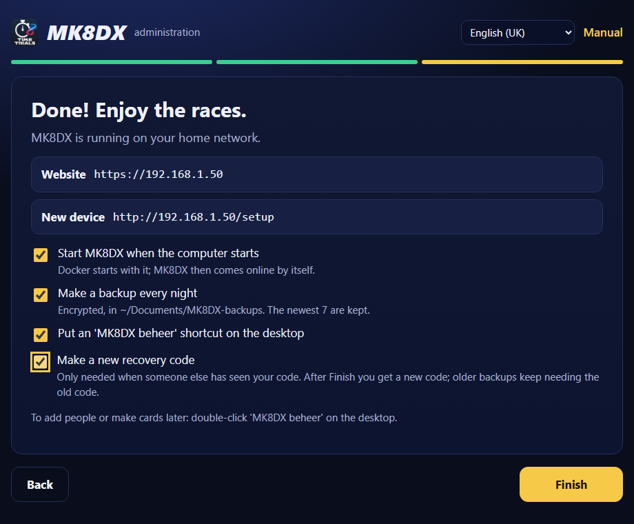
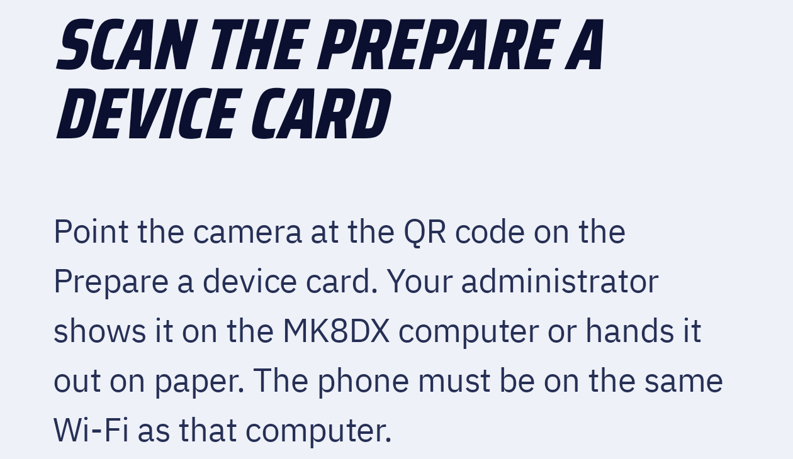

Só são mostrados os passos para a tua escolha.
MK8DX em casa ou no teu clube — manual
Esta é uma tradução automática do manual em inglês; a versão inglesa é a que prevalece. As correções são bem-vindas através do formulário de issue «Translation correction».
Este manual leva-te passo a passo de um computador vazio até uma noite de jogo. Não precisas de nenhum conhecimento de informática. Lê os capítulos por ordem; cada capítulo baseia-se no anterior.
Primeiro, uma nota honesta: a instalação para casa e para clubes está disponível desde a versão 0.2.0. O Windows 11 foi testado de ponta a ponta, incluindo um telemóvel Android na rede. O Linux só foi testado no WSL 2, ainda não num PC Linux separado nem num Raspberry Pi. Os pacotes para macOS estão compilados, mas ainda não foram testados num Mac real, e um iPhone ainda não foi testado. Sempre que algo ainda não foi testado ou ainda não existe, o passo indica-o.
Como ler um passo: depois de Faz vem o que tens de fazer, depois de Vês o que deve acontecer a seguir, e depois de Vês outra coisa? o que fazer nesse caso. As palavras a negrito são botões ou textos que vês exatamente assim no ecrã.
1. O que é o MK8DX em casa ou no teu clube, e de que precisas?
O MK8DX é um site para o Mario Kart 8 Deluxe: guardar e comparar tempos de Contrarrelógio, gravações do LiveTrial e noites de torneio. Com esta instalação, o site funciona num computador da tua própria rede. Telemóveis, tablets e outros computadores da mesma rede abrem o site através desse computador. Nada vai para a internet.
Cada pessoa inicia sessão com um cartão de início de sessão pessoal: um cartão com um código QR. Um código QR é um código de barras quadrado que lês com a câmara do teu telemóvel ou tablet.
Neste manual, o computador onde o MK8DX funciona chama-se o computador MK8DX.
Do que precisas:
- Um computador que fica ligado enquanto se joga: Windows 11 com um processador Intel ou AMD, Linux ou macOS. Recomendam-se 8 GB de memória. A configuração verifica se há pelo menos 6 GB de espaço livre em disco.
- Uma rede doméstica: o Wi-Fi ou os cabos de rede do teu router. Um router é a caixa que cria a tua rede (muitas vezes do teu fornecedor de internet). Todos os dispositivos têm de estar na mesma rede. Não uses uma rede de convidados: normalmente mantém os dispositivos separados.
- Telemóveis, tablets ou outros computadores para os jogadores, de preferência com câmara para ler códigos QR.
- Uma impressora dá jeito para imprimir os cartões de início de sessão e o código de recuperação, mas não é obrigatória.
Do que não precisas:
- Não precisas de internet enquanto jogas. Só durante a preparação transferes uma vez o Docker, o Python e o pacote MK8DX (ou alguém tos dá numa pen USB).
- Não precisas de conta noutra empresa, nem de endereço de e-mail, nem de nuvem.
- Não precisas de subscrição. O MK8DX e o Python são gratuitos. O Docker Desktop é gratuito para uso pessoal e para pequenas organizações; as condições estão no site do Docker. No Linux usas o Docker Engine, que é gratuito.
2. Preparar o computador
O MK8DX precisa de dois programas auxiliares gratuitos:
- O Docker executa programas em «contentores» isolados. O site e a base de dados do MK8DX funcionam dentro deles. No Windows e no macOS o programa chama-se Docker Desktop.
- O Python é uma linguagem de programação. O instalador do MK8DX está escrito nela. Precisas do Python 3.12 a 3.15.
Faz apenas a parte para o teu computador (2A, 2B ou 2C) e salta as outras duas.
2A. Preparar o Windows 11
- Faz verifica que processador tem o teu computador: Iniciar → Settings (Definições) → System (Sistema) → About (Acerca de), linha System type (Tipo de sistema).Vês «64-bit operating system, x64-based processor» (sistema operativo de 64 bits, processador baseado em x64).Vês outra coisa? Se disser ARM, o pacote MK8DX para Windows não serve: só existe para x64 (Intel e AMD).
- Faz instala primeiro o WSL (Windows Subsystem for Linux, o subsistema Windows para Linux). É uma parte do Windows sobre a qual o Docker funciona; sem o WSL, o Docker Desktop não se instala. Clica com o botão direito no botão Iniciar e escolhe Terminal (Admin) (Terminal (Administrador)) ou Windows PowerShell (Admin) (Windows PowerShell (Administrador)). Clica em Yes (Sim) quando o Windows pedir autorização. Escreve
wsl --installe carrega em Enter.Vês o Windows transfere e instala o WSL e o Ubuntu; isto demora alguns minutos. No fim diz que tens de reiniciar o computador. Reinicia o computador.Vês outra coisa? Se, depois de reiniciar, abrir uma janela a pedir um nome de utilizador e uma palavra-passe para o Ubuntu: introduz um nome e uma palavra-passe à tua escolha (o MK8DX não precisa deles) e fecha a janela. Se disser que o WSL já está instalado, escrevewsl --updatee carrega em Enter. Se mencionar virtualization (virtualização) («Virtual Machine Platform» ou «virtualization»), a virtualização está desativada na BIOS do computador; ativa-a (os fabricantes chamam-lhe muitas vezes Intel VT-x ou AMD-V) ou pede ajuda. - Faz transfere o Docker Desktop para Windows (x86_64 / AMD64) a partir de docker.com e abre o ficheiro transferido.Vês o instalador do Docker com a opção de usar o WSL 2. O WSL é uma parte do Windows sobre a qual o Docker funciona. Deixa essa opção marcada e clica em OK.Vês outra coisa? Se o Windows perguntar se esta aplicação pode fazer alterações, clica em Yes (Sim).
- Faz espera até a instalação terminar e reinicia o computador se o Docker o pedir.Vês depois de reiniciar, o Docker Desktop abre (ou abre-o tu a partir do menu Iniciar). Da primeira vez, o Docker pede-te que aceites as condições.Vês outra coisa? Se o Docker te pedir para iniciar sessão ou criar uma conta: o MK8DX não precisa de uma conta Docker; salta esse passo se o Docker o permitir. Se o Docker continuar a dizer que falta o WSL ou que tem de ser atualizado, repete o passo 2 (
wsl --installouwsl --update) e reinicia. - Faz espera na janela do Docker Desktop.Vês Engine running (motor em execução) no canto inferior esquerdo.Vês outra coisa? «Engine starting» (motor a arrancar) pode demorar alguns minutos. Se ficar parado ou mostrar um erro, reinicia o computador e abre de novo o Docker Desktop. O Docker tem de estar no modo normal de contentores Linux (não em «Windows containers»).
- Faz vai a python.org → Downloads e transfere o Python install manager (gestor de instalação do Python) para Windows (o ficheiro termina em
.msix). Esta é agora a forma oficial de instalar o Python no Windows. Abre o ficheiro transferido e clica em Install (Instalar).Vês o Windows instala o Python install manager; depois podes fechar a janela.Vês outra coisa? Também o podes instalar a partir da Microsoft Store: pesquisa «Python install manager» e clica em Install (Instalar). Usa uma das duas formas, não as duas. - Faz clica em Iniciar, escreve
PowerShell, abre o Windows PowerShell, escrevepy install 3.15e carrega em Enter. Isto instala o próprio Python (o install manager é só a ferramenta que vai buscar o Python).Vês da primeira vez, algumas perguntas para verificar as definições; responde com Enter (a opção sugerida) ouy. Depois o Python é transferido e instalado. Uma pergunta sobre adicionar uma pasta ao teu PATH pode ser respondida comy; não é obrigatório.Vês outra coisa? Instala exatamente a 3.15, como acima; a 3.12, 3.13 ou 3.14 também funcionam, uma versão mais recente (3.16 ou posterior) ainda não. - Faz fecha o PowerShell, abre-o de novo, escreve
python --versione carrega em Enter.VêsPython 3.15seguido de um número, por exemploPython 3.15.2.Vês outra coisa? Se abrir a Microsoft Store, ou se disser que o python não foi encontrado: clica em Iniciar, escreve Manage app execution aliases (Gerir aliases de execução de aplicações) e abre-o. Ativa Python (default) (Python (predefinido)) e desativa App Installer python.exe e python3.exe. Se no passado instalaste um Python antigo ou o «Python launcher», remove-o através de Settings → Apps → Installed apps (Definições → Aplicações → Aplicações instaladas) e tenta de novo.
2B. Preparar o Linux (Ubuntu ou Debian)
O Linux ainda não foi testado de ponta a ponta com o MK8DX. Os passos foram escritos para o Ubuntu 24.04 ou mais recente. Escreve-os num terminal: uma janela onde dás comandos de texto (no Ubuntu abres-o com Ctrl+Alt+T). Termina cada comando com Enter. sudo antes de um comando significa «como administrador deste computador»: o Linux pede então a tua palavra-passe, e não vês nenhum carácter enquanto escreves. Isso é normal.
- Faz escreve
python3 --version.VêsPython 3.12,3.13,3.14ou3.15.Vês outra coisa? Um número mais baixo (o Debian 12, por exemplo, tem a 3.11) é demasiado antigo; a 3.16 ou superior ainda não é suportada. Nesse caso precisas de uma versão mais recente do teu Linux; o Ubuntu 24.04 tem o Python 3.12. - Faz escreve
sudo apt updatee depoissudo apt install docker.io docker-compose-v2 python3-venv unzip. Responde à pergunta se queres continuar com Y e Enter.Vês os pacotes são transferidos e instalados.Vês outra coisa? Se o apt não encontrar um pacote, ele tem outro nome no teu Linux (pode acontecer no Debian). Continua e verifica no passo 5 se o Docker Compose funciona. - Faz escreve
sudo systemctl enable --now docker. Isto arranca o Docker agora e sempre que o computador arrancar.Vês nenhum erro (por vezes uma linha que começa com «Created symlink»). - Faz escreve
sudo usermod -aG docker $USER. Isto dá ao teu utilizador o direito de usar o Docker. Depois termina a sessão e volta a iniciá-la (ou reinicia): o direito só funciona depois de voltares a iniciar sessão.Vês nenhum erro. → Nota: quem estiver no grupo docker tem, na prática, direitos de administrador neste computador. Adiciona apenas a ti próprio. - Faz verifica com
docker infoe depoisdocker compose version.Vês uma lista de dados sem erro, e «Docker Compose version» com um número.Vês outra coisa? «permission denied» (permissão negada): faz o passo 4 e não te esqueças de terminar a sessão. «Cannot connect to the Docker daemon» (não é possível ligar ao serviço Docker): faz o passo 3.
Uma firewall é uma proteção que decide que ligações um computador deixa entrar. Se a firewall ufw ou firewalld estiver ativa no teu Linux, a configuração no capítulo 3 mostra que comando deixa passar o MK8DX.
2C. Preparar o macOS
Nota: o macOS ainda não foi testado num Mac real. Os passos abaixo seguem o que a configuração espera no macOS.
- Faz escolhe menu Apple → About This Mac (Acerca deste Mac) e vê Chip ou Processor (Processador).Vês um chip Apple (M1, M2 e posteriores): usa o pacote
macos-arm64.Vês outra coisa? Um processador Intel: usa o pacotemacos-amd64. Precisa do macOS 10.15 ou mais recente e de um Docker Desktop que ainda suporte o teu Mac. - Faz transfere o Docker Desktop para Mac com o chip correspondente a partir de docker.com, abre o ficheiro transferido e arrasta o Docker para Applications (Aplicações).Vês o Docker na tua pasta Aplicações.
- Faz abre o Docker. Aceita as condições; se o macOS pedir a tua palavra-passe, introdu-la.Vês passado um bocado, Engine running (motor em execução) na janela do Docker Desktop.Vês outra coisa? Se o Docker te pedir para iniciar sessão: o MK8DX não precisa de uma conta Docker; salta esse passo se o Docker o permitir.
- Faz transfere o instalador para macOS do Python 3.15 a partir de python.org e abre-o. Avança pelos passos com Continue (Continuar) e Install (Instalar).Vês a mensagem de que a instalação foi bem-sucedida.
- Faz abre o Terminal (Aplicações → Utilitários → Terminal), escreve
python3 --versione carrega em Enter.VêsPython 3.12a3.15.Vês outra coisa? Um número mais baixo (por exemplo a 3.9 da própria Apple): fecha o Terminal e abre-o de novo. Se continuar mais baixo, instala de novo o Python a partir de python.org. - Faz escreve
docker infono Terminal.Vês uma lista de dados sem erro.Vês outra coisa? Arranca o Docker Desktop e espera por Engine running.
3. Instalar o MK8DX
Descompactar o pacote
- Faz transfere o pacote MK8DX para casa ou clube para o teu sistema: Windows, Linux ou macOS, e para Linux e macOS também para o teu processador (amd64 ou arm64). Para verificar se a transferência está correta, compara o seu SHA-256 com a respetiva linha em
SHA256SUMS.txtda mesma versão (Windows:Get-FileHash <file> -Algorithm SHA256; Linux:sha256sum <file>; macOS:shasum -a 256 <file>); vê tambémdocs/RELEASE_PACKAGES.md#check-a-download.Vês um ficheiro zip na tua pasta Transferências.Vês outra coisa? Se o navegador avisar que o ficheiro não é seguro ou é raramente transferido: escolhe Keep (Manter). Windows: depois clica com o botão direito no ficheiro zip → Properties (Propriedades), marca Unblock (Desbloquear) em baixo e clica em OK. Faz isto antes de descompactar; caso contrário, o Windows (Smart App Control, o Controlo Inteligente de Aplicações) pode bloquear mais tarde oStart-MK8DX-LAN.cmd. Não desligues o Smart App Control: depois só o podes voltar a ligar com uma nova instalação do Windows. - Faz descompacta o ficheiro zip para uma pasta permanente, por exemplo uma pasta MK8DX em Documentos. Windows: clica com o botão direito no ficheiro zip → Extract All (Extrair Tudo). Escolhe uma pasta permanente: o MK8DX arrancará a partir dela mais tarde. Mantém-na no mesmo sítio enquanto estiver ativa; se precisares de a mover, segue o procedimento do capítulo 11 em vez de a mover apenas no Explorador.Vês uma pasta com, entre outros,
Start-MK8DX-LAN.cmd,README-FIRST.txte as pastasdocs,imagesetooling.Vês outra coisa? Se apenas abriste o ficheiro zip no Explorador de Ficheiros, extrai-o mesmo: arrancar a partir de dentro do ficheiro zip não funciona. Linux sem gestor de ficheiros (um servidor ou WSL):unzip ~/Downloads/mk8dx-a2-linux-amd64-<version>.zip -d ~/Documents/MK8DX(com o nome do teu ficheiro; ounzipvem do passo 2 do capítulo 2B). O zip contém uma pasta com o nome do pacote; abre essa pasta para iniciar o MK8DX.
Arrancar no Windows
- Faz na pasta descompactada, faz duplo clique em Start-MK8DX-LAN.cmd.Vês uma janela com o logótipo do MK8DX e uma contagem decrescente 3-2-1-GO com bips (para a omitir), depois linhas como «Pacote MK8DX:» e «Instalação privada:». Da primeira vez mostra também «A preparar os pacotes Python incluídos (uma única vez, sem internet).» e «A carregar as imagens Docker incluídas. Isto pode demorar vários minutos.» Isso demora alguns minutos. Depois mostra «MK8DX setup is open in your browser:» (a configuração do MK8DX está aberta no teu navegador) e a configuração abre-se no teu navegador.Vês outra coisa? Vê as mensagens abaixo.
- Faz mantém a janela preta aberta até teres clicado em Concluir na configuração. A própria janela também o diz: «Keep this window open until you click Finish.» (mantém esta janela aberta até clicares em Finish).
Mensagens na janela preta no Windows:
- "Falta o Python 3.12 a 3.15. Instala o Python install manager a partir de python.org (ou da Microsoft Store), executa: py install 3.15, volta a abrir o PowerShell e tenta novamente." Faz os passos 6 a 8 do capítulo 2A e depois faz de novo duplo clique em Start-MK8DX-LAN.cmd.
- "O Docker Desktop não está instalado ou não está em execução. Inicia o Docker Desktop no modo de contentores Linux, espera até mostrar "Engine running" e tenta novamente." Arranca o Docker Desktop, espera por Engine running e faz de novo duplo clique.
- Por baixo de um erro aparece "O passo selecionado parou. Lê a mensagem acima antes de tentar novamente." Lê a linha acima, corrige isso e carrega numa tecla para fechar a janela.
Arrancar no Linux e no macOS
- Faz abre um terminal na pasta descompactada. Linux: clica com o botão direito na pasta e escolhe «Open in Terminal» (Abrir no Terminal) se o teu gestor de ficheiros o oferecer. No macOS e no Linux também funciona assim: abre o Terminal, escreve
cd(com um espaço a seguir), arrasta a pasta para a janela e carrega em Enter.Vês o terminal está na pasta do pacote. - Faz escreve
sh tooling/start-mk8dx.she carrega em Enter.Vês o logótipo do MK8DX e uma contagem decrescente 3-2-1-GO, depois «Pacote MK8DX:», o número do Python e «Docker Compose version». Da primeira vez também «A carregar as imagens Docker incluídas. Isto pode demorar vários minutos.» e «A preparar os pacotes Python incluídos (uma única vez, sem internet).» Depois «Instalação privada:» e «MK8DX setup is open in your browser:» (a configuração do MK8DX está aberta no teu navegador), e a configuração abre-se no teu navegador.Vês outra coisa? Se não abrir nenhum navegador, copia do terminal para o teu navegador o endereço que começa porhttp://127.0.0.1:. - Faz mantém o terminal aberto até teres clicado em Concluir.
Mensagens no terminal no Linux e no macOS:
- "Falta o Python 3.12 a 3.15. Instala-o (Ubuntu/Debian: sudo apt install python3 python3-venv; macOS: python.org) e tenta novamente." Faz de novo o capítulo 2B ou 2C.
- "O Docker não está em execução ou este utilizador não o pode usar (Linux: sudo systemctl start docker e junta-te ao grupo docker; macOS: inicia o Docker Desktop)." Linux: faz os passos 3 e 4 do capítulo 2B. macOS: arranca o Docker Desktop.
- "Não foi possível criar o ambiente Python privado (Ubuntu/Debian: sudo apt install python3-venv)." Instala o python3-venv como no passo 2 do capítulo 2B.
A configuração no navegador
A configuração é uma página no teu navegador que só funciona no próprio computador MK8DX. Está no idioma do teu navegador (um dos 15 idiomas do jogo; caso contrário, em inglês). No canto superior direito estão o menu de idiomas, para escolheres outro idioma, e Manual: abre este manual. Em baixo estão Voltar, por vezes Avançado, e Seguinte. Os pontos no topo mostram em que ponto estás.
- Bem-vindo ao MK8DX.Faz lê o ecrã e clica em Seguinte.Vês «Verificação rápida». O botão Restaurar uma cópia de segurança neste ecrã é só para um computador novo (capítulo 10).
- Verificação rápida.Faz espera um momento.Vês três visto verdes em O Docker Desktop está em execução, Espaço livre suficiente no disco (com o número de GB) e Windows, Linux ou macOS. Clica em Seguinte.Vês outra coisa? Um ponto de exclamação com uma explicação, por exemplo «Inicia o Docker Desktop, espera por «Engine running» e clica em Tentar novamente.» ou «Liberta pelo menos 6 GB nesta unidade.» Corrige isso e clica em Tentar novamente. No Linux a primeira verificação também se chama «O Docker Desktop está em execução»; aí trata-se do Docker Engine.
- Que tipo de instalação?Faz deixa selecionado Rede de casa, do clube ou de noite LAN, sem necessidade de internet (recomendado) e clica em Seguinte.Vês «A tua rede».
- A tua rede. Um endereço de rede (endereço IP) é o número pelo qual os dispositivos encontram este computador na tua rede, como um número de porta numa rua.Faz lê o endereço por baixo de «Telemóveis, tablets e outros PCs acedem ao MK8DX neste endereço:» e aponta-o, por exemplo
https://192.168.1.50. Clica em Instalar.Vês no Windows «Esta rede está configurada como rede doméstica (privada).» ou «Neste momento, o Windows trata esta rede como pública. Quando clicares em Instalar, o MK8DX marca-a como privada e só deixa passar o MK8DX.» No Linux e no macOS não aparece aqui nenhuma frase sobre a rede.Vês outra coisa? Se o computador tiver mais do que uma ligação (cabo e Wi-Fi), clica em Avançado e, em «Escolhe outro endereço deste computador:», escolhe o endereço da rede em que os telemóveis também estão. Se disser «Nenhum endereço de rede encontrado.», liga o computador à tua rede doméstica e clica em Tentar novamente. - A instalar.Faz espera e mantém a janela aberta.Vês «O MK8DX está a ser preparado. Mantém esta janela aberta.» e, um após o outro, «A preparar a instalação», «A permitir a rede (o Windows pede autorização)», «A iniciar a base de dados e o site», «A verificar» e por fim «O MK8DX está em execução. Faltam dois passos curtos.» Clica em Seguinte. No Windows, uma janela do Windows pergunta uma vez se o Windows PowerShell pode fazer alterações: clica em Yes (Sim). Com isso, o MK8DX marca a tua rede doméstica como privada e deixa passar só o MK8DX pela firewall (a proteção do Windows). Se o MK8DX já tiver sido instalado antes neste computador e neste endereço, essa autorização ainda existe e o Windows não volta a perguntar.Vês outra coisa? Um erro a vermelho: clica em Detalhes para ler o que correu mal, corrige-o e clica em Tentar novamente. Se clicaste em No (Não) na janela do Windows, aparece que o Windows não permitiu a alteração; clica em Tentar novamente e depois em Yes.
- Só no Linux: a firewall.Faz durante ou depois da instalação, clica em Detalhes e procura a linha que começa por «Network:» (rede).Vês «not-needed» (não é preciso fazer nada), ou «manual:» seguido de um comando como
sudo ufw allow from 192.168.1.0/24 to 192.168.1.50 port 80,443 proto tcp. → Depois faz: escreve exatamente esse comando (com o teu endereço, como aparece aí) num terminal. Sem esse comando, os telemóveis não conseguem abrir o site. - A tua conta de administrador. O administrador é a pessoa que adiciona pessoas e faz cartões de início de sessão; és tu.Faz introduz um nome em O teu nome, por exemplo «Pai» ou «Equipa do clube», e clica em Seguinte. O nome só é visível dentro desta instalação.Vês «Quem joga?»
- Quem joga?Faz escreve os nomes dos jogadores em Nomes (um por linha), cada um na sua linha, e clica em Adicionar. Ou clica logo em Saltar: podes fazê-lo mais tarde, exatamente da mesma forma, no MK8DX beheer (capítulo 5).Vês os nomes por baixo de «Nesta instalação:», tu próprio com «(administrador)» a seguir ao teu nome. Clica em Seguinte.
- Iniciar sessão em telemóveis e PCs.Faz já podes fazer aqui cartões de início de sessão (os capítulos 5 e 6 explicam como), ou simplesmente clicar em Seguinte.Vês «Concluído! Boas corridas.»
- Concluído! Boas corridas.Faz aponta os dois endereços: Site (por exemplo
https://192.168.1.50) e Novo dispositivo (por exemplohttp://192.168.1.50/setup). Deixa marcadas as três opções: Iniciar o MK8DX com o Windows, Fazer uma cópia de segurança todas as noites e Criar um atalho «MK8DX beheer» no ambiente de trabalho. Clica em Concluir.Vês o teu código de recuperação (capítulo 4). → No Linux e no macOS a primeira opção chama-se «Iniciar o MK8DX quando o computador arranca». No macOS abre então o Docker Desktop quando inicias sessão. No Linux, é osudo systemctl enable --now dockerdo capítulo 2B que trata disso; se ainda não o fizeste, a configuração mostra exatamente esse comando depois de Concluir. - Fechar.Faz lê o capítulo 4 e guarda o código de recuperação. Depois clica em Fechar.Vês «Já podes fechar esta janela.» Fecha o separador do navegador. No Windows, a janela preta pede uma tecla; carrega numa tecla e ela fecha-se. Se não fizeres nada, a página de configuração para sozinha ao fim de 10 minutos. O próprio MK8DX continua a funcionar.


4. O código de recuperação e a pasta das cópias de segurança
Uma cópia de segurança é uma cópia de reserva de tudo o que está no MK8DX: pessoas, tempos, torneios e definições. O MK8DX faz uma cópia de segurança todas as noites às 03:00 e guarda as 7 mais recentes. As cópias de segurança estão encriptadas: sem a chave não podem ser lidas.
O código de recuperação é essa chave. São cinco grupos de quatro letras e algarismos, por exemplo ABCD-EFGH-JKLM-NPQR-STUV. Só precisas dele para restaurar uma cópia de segurança noutro computador.
- Faz depois de Concluir, olha para o cartão Código de recuperação do MK8DX.Vês o código, a frase «Sem este código não é possível abrir uma cópia de segurança. Só é mostrado uma vez.» e, por baixo, a pasta para onde vão as cópias de segurança.
- Faz copia o código para papel ou clica em Imprimir cartões para imprimir esta página. Verifica-o letra a letra.Vês o código em papel. → Porquê só uma vez? O MK8DX guarda o código protegido neste computador para a cópia de segurança noturna, mas nunca mais o mostra. Se o computador avariar, só resta o papel.
- Faz guarda o papel num local seguro, não ao lado do computador. Quem tiver o código e uma cópia de segurança pode abrir tudo.
Onde estão as cópias de segurança:
- Windows: na pasta Documentos, pasta
MK8DX-backups(no disco:C:\Users\<your name>\Documents\MK8DX-backups). - Linux e macOS: na tua pasta pessoal, pasta
Documents/MK8DX-backups(portanto~/Documents/MK8DX-backups). Mesmo num Linux noutro idioma, essa pasta chama-se Documents. - A configuração mostra a pasta exata por baixo do código de recuperação.
De vez em quando, copia a pasta MK8DX-backups para uma pen USB ou outro disco. Caso contrário, se o computador avariar, as cópias de segurança ficam apenas nesse computador avariado.
Se desmarcares Fazer uma cópia de segurança todas as noites e clicares em Concluir, o MK8DX deixa de fazer a cópia de segurança noturna; as cópias já feitas ficam. Se mais tarde voltares a marcar, as cópias continuam com o mesmo código de recuperação, que não volta a ser mostrado. Se já não tiveres esse código, cria um novo como abaixo.
Um novo código de recuperação
Cria um código novo se outra pessoa pode ter visto o teu ou se perdeste o papel. Funciona a partir da versão 0.2.7.
- Faz abre o MK8DX beheer, clica em Seguinte até «Concluído! Boas corridas.», marca Criar um novo código de recuperação e clica em Concluir.Vês o cartão Código de recuperação do MK8DX com o código novo, mostrado só uma vez, e a frase de que as cópias anteriores continuam a precisar do código antigo.
- Faz escreve o código novo como no passo 2 acima. Guarda o papel antigo com as cópias anteriores: não são convertidas e só abrem com o código antigo. Apaga essas cópias antigas e o papel antigo quando já não precisares deles.Vês as cópias seguintes usam o código novo.


5. Pessoas e cartões de início de sessão (MK8DX beheer)
O MK8DX beheer (em neerlandês, «administração do MK8DX») é a mesma página que a configuração, mas para mais tarde: adicionar pessoas e fazer cartões de início de sessão. Só funciona no próprio computador MK8DX. O atalho no ambiente de trabalho chama-se «MK8DX beheer» em todos os idiomas; o título da página é Administração do MK8DX.
Uma conta é quem inicia sessão. Um Jogador é o jogador nas classificações, com os seus tempos. Depois de iniciar sessão, cada pessoa escolhe ou reivindica o seu próprio Jogador no site. Os nomes nunca são associados automaticamente.
Abrir o MK8DX beheer
- Faz (Windows): faz duplo clique em MK8DX beheer no ambiente de trabalho. Esse atalho arranca o mesmo que o Start-MK8DX-LAN.cmd. → Vês: a janela de arranque com a sua curta introdução de corrida e depois, no navegador, a página com «administração» no topo e o título Administração do MK8DX. → Vês outra coisa? Não há atalho: faz duplo clique em Start-MK8DX-LAN.cmd na pasta MK8DX.
- Faz (Linux): arranca o MK8DX beheer a partir do ambiente de trabalho ou do menu de aplicações. Em alguns ambientes de trabalho Linux, tens primeiro de permitir um ícone destes (clica com o botão direito e escolhe a opção que permite iniciá-lo). Também funciona com
sh tooling/start-mk8dx.shna pasta MK8DX, como no capítulo 3. → Vês: um terminal e depois a página Administração do MK8DX. - Faz (macOS, não testado): faz duplo clique em MK8DX beheer.command no ambiente de trabalho, ou arranca
sh tooling/start-mk8dx.shcomo no capítulo 3. → Vês: o Terminal e depois a página Administração do MK8DX.
- Escreveste tu mesmo 127.0.0.1 com uma porta? Uma página MK8DX lokaal beheer que pede um código de administração de utilização única é a página técnica do anfitrião. Não precisas dela: fecha-a e abre o MK8DX beheer com o atalho, como acima.
Adicionar pessoas
- Faz escreve os nomes em Nomes (um por linha) e clica em Adicionar.Vês os nomes por baixo de «Nesta instalação:».
- Faz clica em Seguinte.Vês «Iniciar sessão em telemóveis e PCs» em dois passos: Passo 1 · Preparar o dispositivo com o cartão Preparar um dispositivo (uma vez por dispositivo, ainda não te inicia sessão) e Passo 2 · Iniciar sessão como a pessoa certa com, para cada pessoa, uma caixa com o botão Criar cartão.
Fazer e imprimir cartões
- Faz clica em Criar cartão ao lado de uma pessoa.Vês um código QR com «Válido até» e uma hora. Um cartão funciona uma vez e durante 15 minutos. Deixa a pessoa lê-lo logo (capítulo 6), ou imprime-o.
- Faz faz primeiro os cartões que queres e depois clica em Imprimir cartões.Vês a janela de impressão do teu navegador com todos os cartões do ecrã, incluindo o cartão Preparar um dispositivo.
- Faz faz também um cartão para ti (o nome com «(administrador)») se quiseres iniciar sessão no teu telemóvel.
Substituir ou revogar um cartão
- Novo cartão: faz um cartão novo para essa pessoa. O cartão anterior dessa pessoa neste ecrã deixa então de funcionar.
- Revogar cartão: o cartão deixa de funcionar de imediato. Vês «Revogado: este cartão já não funciona.» Usa isto quando um cartão se perde ou foi parar à pessoa errada.
- Só podes revogar um cartão que ainda esteja neste ecrã. Se já fechaste o MK8DX beheer, um cartão não usado expira sozinho ao fim de 15 minutos. Se pode já ter sido usado, escolhe Terminar sessão em todo o lado, abaixo.
Terminar a sessão de alguém em todo o lado
- Faz abre o MK8DX beheer. No primeiro ecrã, cada pessoa tem um botão Terminar sessão em todo o lado. Clica nele.Vês o botão muda para Tens a certeza? Clica outra vez.
- Faz clica mais uma vez.Vês «Sessão terminada em todos os dispositivos. Com um novo cartão, esta pessoa pode voltar a iniciar sessão.» Essa pessoa tem agora a sessão terminada no site e na aplicação, a mudança com um toque para essa conta desaparece e os cartões abertos dessa pessoa deixam de funcionar.Vês outra coisa? Ao lado do teu próprio nome, o segundo clique mostra «Para terminares a tua própria sessão, usa o menu de conta no site («Terminar sessão em todos os dispositivos»).» e não é terminada nenhuma sessão.
Adicionar um telemóvel ou dispositivo para uma pessoa
A forma guiada de pôr a funcionar o telemóvel, tablet ou PC de alguém, também um iPhone ou um dispositivo sem a app MK8DX.
- Faz abre o MK8DX beheer e clica em Adicionar um telemóvel ou dispositivo ao lado da pessoa.Vês «Adicionar um telemóvel ou dispositivo para …» com o nome, e 1 · Confiar com o cartão Preparar um dispositivo e o seu código curto.
- Faz no dispositivo, com a app MK8DX (Android): lê o código QR na app. Sem a app (iPhone, iPad, outro telemóvel ou um PC): lê-o com a câmara e segue a página que abre para instalar o certificado (capítulo 6). Verifica que a página ou a app mostra o mesmo código. Se este dispositivo já foi preparado antes, salta este passo. Clica em Seguinte.Vês 2 · Digitalizar cartão de início de sessão com o cartão pessoal dessa pessoa, «Pessoal para … Funciona uma vez.» e uma contagem decrescente como «Válido por mais 14:59».
- Faz lê esse cartão com o mesmo dispositivo e aceita aí o convite (capítulo 6).Vês no MK8DX beheer, sozinho, em poucos segundos: 3 · Concluído e «… tem a sessão iniciada».Vês outra coisa? «Este cartão expirou.» ou «Este cartão foi revogado.»: clica em Novo cartão; o cartão antigo deixa de funcionar quando fazes um novo. «Esta instalação não consegue indicar se o cartão foi usado»: verifica o dispositivo e clica em Funcionou.
- Faz clica em Outro dispositivo para um segundo dispositivo da mesma pessoa, ou em Voltar às pessoas.
Imprimir um cartão de boas-vindas
- Faz em Adicionar um telemóvel ou dispositivo, escolhe A6 ou A4 em Tamanho do papel e clica em Cartão de boas-vindas.Vês uma pré-visualização de uma página, «Bem-vindo ao MK8DX, …!», com o endereço e três passos numerados: 1 Confiar (o código QR de Preparar um dispositivo e o código de verificação), 2 Digitalizar cartão de início de sessão (o código QR pessoal, marcado como PESSOAL, com «Válido até») e 3 Concluído.
- Faz clica em Imprimir e depois em Voltar.Vês a janela de impressão do teu navegador só com o cartão de boas-vindas.
- O cartão de início de sessão que lá está funciona uma vez e durante 15 minutos a partir do momento em que foi criado, também em papel. O MK8DX não consegue criar um cartão que dure mais, por isso imprime-o só pouco antes de o entregares. Impresso sem um cartão válido (no passo 1, ou depois de ter expirado), o passo 2 é uma caixa vazia: a pessoa recebe então um cartão novo no próprio dia. A parte Confiar continua válida até o MK8DX mudar para outro endereço.
Fechar o MK8DX beheer
- Faz clica em Seguinte até «Concluído! Boas corridas.», deixa as opções marcadas, clica em Concluir e depois em Fechar.Vês «Já podes fechar esta janela.» O MK8DX continua a funcionar.


6. Preparar um dispositivo e iniciar sessão
Um certificado é uma prova digital de identidade. Com ele, um telemóvel sabe com certeza que está a falar com o teu computador MK8DX e com mais nenhum, e a ligação é encriptada (https). Como o MK8DX funciona sem internet, a configuração cria o seu próprio certificado. Cada dispositivo tem de aprender uma vez a confiar nele. A impressão digital é um código curto que pertence exatamente a este certificado; com ela verificas que estás a instalar o certificado certo.
Porquê um certificado, mesmo em casa sem internet?
- Saber com certeza que é o teu MK8DX. Numa rede de casa ou de clube, qualquer pessoa no mesmo Wi-Fi pode fazer-se passar pelo teu computador MK8DX, por exemplo um convidado com um portátil. Sem certificado, o teu telemóvel não consegue ver a diferença. Com o certificado, o navegador recusa qualquer outro computador.
- Ninguém está à escuta. Os cartões de início de sessão, a tua sessão e tudo o que introduzes viajam encriptados pelo Wi-Fi.
- Porque é que o MK8DX cria o seu próprio certificado. Os sites na internet usam certificados de emissores conhecidos que já estão em todos os dispositivos. Esses emissores não passam certificados para um endereço doméstico como
192.168.1.50e não funcionam sem internet. Por isso, o MK8DX cria o seu próprio certificado durante a instalação, e tu dizes uma vez a cada dispositivo que pode confiar nele. - O que permites ao instalá-lo. O certificado destina-se apenas aos endereços de rede privados do MK8DX, e a sua chave secreta fica protegida no computador MK8DX. Instala apenas o certificado do teu próprio MK8DX (verifica a impressão digital) e remove-o de um dispositivo quando deixares de usar essa instalação.
O que não funciona se não instalares o certificado?
- O navegador mostra em cada visita um aviso de página inteira, como «Your connection is not private» (a tua ligação não é privada). Podes fechá-lo, mas não o faças: assim deixas de conseguir ver se estás mesmo a falar com o teu MK8DX.
- Mesmo depois de fechares o aviso, as notificações do navegador não funcionam: o navegador só as permite com um certificado de confiança. Outras funções do navegador também podem recusar-se.
- O que funciona sem certificado instalado: a aplicação Android. Ela aprende o certificado sozinha a partir do cartão Preparar um dispositivo (capítulo 7). Um navegador no mesmo dispositivo continua a precisar do certificado.
O próprio computador MK8DX
O computador onde o MK8DX funciona também tem de confiar uma vez no MK8DX; caso contrário, o seu navegador avisa sobre o site.
- Faz abre o MK8DX beheer, clica em Seguinte até «Iniciar sessão em telemóveis e PCs» e olha para o bloco Este computador por baixo de Passo 1.Vês «Este computador já confia no MK8DX.» Então está feito.Vês outra coisa? Se aparecer o botão Preparar este computador, vai para o passo 2.
- Faz clica em Preparar este computador.Vês uma janela do Windows, Security Warning (Aviso de Segurança), a perguntar se queres instalar o certificado, com um thumbprint (sha1) (thumbprint/impressão digital, sha1). Compara-o com o thumbprint no MK8DX beheer; se forem iguais, clica em Yes (Sim).Vês «Este computador já confia no MK8DX.»Vês outra coisa? Se clicaste em No (Não) ou se os thumbprints forem diferentes: não cliques em Yes, fecha a janela e pede ajuda. No Linux ou no macOS, em vez do botão, aparece a indicação para abrir o endereço por baixo de Preparar um dispositivo no navegador deste computador; depois segue os passos abaixo neste computador.
Uma vez por dispositivo: Preparar um dispositivo
- Faz liga o telemóvel, tablet ou PC ao mesmo Wi-Fi ou à mesma rede com cabo que o computador MK8DX. Num telemóvel, não uses dados móveis em vez de Wi-Fi.Vês o nome do teu próprio Wi-Fi na ligação.
- Faz com a câmara, lê o código QR do cartão Preparar um dispositivo (no MK8DX beheer ou em papel) e toca na ligação que aparece. Sem câmara, escreve no navegador o endereço Novo dispositivo, por exemplo
http://192.168.1.50/setup.Vês a página Preparar este dispositivo com «Faz isto uma vez por telemóvel, tablet ou PC. Depois, lê o teu cartão pessoal de início de sessão.»Vês outra coisa? Se a página não abrir: verifica a rede e se o computador MK8DX está ligado (capítulo 11). - Faz compara o código por baixo de «Verifica primeiro este código.» com a Impressão digital no cartão Preparar um dispositivo (quatro grupos de quatro caracteres).Vês exatamente o mesmo código.Vês outra coisa? Se o código for diferente, não instales nada. Podes estar noutra rede ou noutro endereço; verifica isso primeiro.
- Faz segue a parte para o teu dispositivo. A parte para o dispositivo que estás a usar já está aberta; para outro dispositivo, abre-a em «Outro tipo de dispositivo?» Toca em Transferir certificado (iPhone e iPad: Transferir perfil) e segue os passos abaixo. O ficheiro chama-se
MK8DX-<código de verificação>-<data>.crt. Se o Chrome avisar que a transferência não é segura, escolhe Manter apenas depois de confirmar que o código corresponde ao cartão.Vês em baixo, «Já está? Lê o teu cartão pessoal de início de sessão ou abre» com o endereço do site.
Os passos na página Preparar este dispositivo:
- Android: toca no botão para transferir o certificado. Abre as Settings (Definições) e pesquisa «certificate» («certificado»; muitas vezes: Security → More security settings → Encryption & credentials → Install a certificate → CA certificate, ou seja Segurança → Mais definições de segurança → Encriptação e credenciais → Instalar um certificado → Certificado da AC). Escolhe o ficheiro MK8DX transferido e confirma com o teu PIN. Os nomes dos menus variam conforme a marca do telemóvel.
- iPhone e iPad (ainda não testados com esta instalação): toca no botão para transferir o perfil e permite-o. Abre Settings → Profile downloaded → Install (Definições → Perfil transferido → Instalar). Depois Settings → General → About → Certificate Trust Settings (Definições → Geral → Informações → Definições de confiança de certificados) → ativa o MK8DX.
- Windows: transfere o certificado e abre-o. Escolhe Install Certificate → Current User → Place all certificates in the following store → Trusted Root Certification Authorities (Instalar Certificado → Utilizador Atual → Colocar todos os certificados no seguinte arquivo → Autoridades de Certificação de Raiz Fidedigna). Não escolhas Intermediate Certification Authorities (Autoridades de Certificação Intermédias). Reinicia o navegador.
- Mac (o macOS ainda não foi testado de ponta a ponta): transfere o certificado e abre-o; abre-se o Keychain Access (Acesso a Porta-chaves). Abre o certificado MK8DX → Trust → Always Trust (Confiança → Confiar sempre).
- Linux (esta via ainda não foi testada de ponta a ponta): adiciona o mesmo certificado ao arquivo de raízes de confiança da tua distribuição ou do teu navegador. Os passos exatos variam conforme a distribuição. No Ubuntu e no Debian (testado no WSL 2): o
MK8DX-.crttransferido está em formato DER, por isso converte-o ao instalá-lo:sudo openssl x509 -inform DER -in ~/Downloads/MK8DX-.crt -out /usr/local/share/ca-certificates/mk8dx.crte depoissudo update-ca-certificates. O Firefox e o Chrome no Linux podem ter o seu próprio arquivo; importa lá o mesmo ficheiro nas definições de certificados (Autoridades) se o navegador continuar a avisar.
Iniciar sessão com o teu cartão pessoal
- Faz lê o teu próprio cartão (o cartão com o teu nome) e toca na ligação.Vês Junta-te a esta instalação do MK8DX e «Verifica primeiro se este endereço HTTPS pertence ao anfitrião em que confias. O convite só pode ser usado uma vez.» A barra de endereço do navegador tem de mostrar o endereço do site, por exemplo
https://192.168.1.50.Vês outra coisa? Um aviso do navegador sobre o certificado ou uma ligação não segura: nunca o feches. Faz primeiro o Preparar um dispositivo acima. - Faz verifica o nome do cartão por baixo de Vais iniciar sessão como:. Se for o teu nome, espera por «Convite pronto. Confirma para iniciar sessão.» e toca em Aceitar convite. Se aparecer outro nome, não toques em aceitar: o cartão continua válido para a pessoa certa.Vês «Tens sessão iniciada como» com o teu nome, e Continuar para o MK8DX. Toca nele.Vês outra coisa? «Este convite é inválido. Pede um novo código QR ao administrador.» ou «Não foi possível iniciar sessão. Pede um novo convite ao administrador.»: o cartão já foi usado, expirou ou foi revogado. Pede ao administrador que faça um Novo cartão.
- Faz segue os passos de boas-vindas no site: se já tens tempos ou torneios aqui, e como queres ser chamado. É assim que escolhes ou reivindicas o teu próprio Jogador.Vês o teu nome e os teus tempos.Vês outra coisa? Se o nome do teu cartão (por exemplo «Pai») não estiver já preenchido: está certo. O nome no cartão é apenas a etiqueta na administração do MK8DX; o teu nome de jogador escolhes tu aqui.
Outro dispositivo para a mesma pessoa
- Um jogador pode fazer um cartão sozinho: o menu da conta no site tem Iniciar sessão também noutro dispositivo. Abre Iniciar sessão noutro dispositivo com um cartão que «Funciona uma vez, válido até» uma hora. Lê-o com o outro dispositivo. Mostra-o apenas ao teu próprio dispositivo: quem o ler fica com sessão iniciada na tua conta.
- Os administradores não têm esse botão. Fazem um Novo cartão para si próprios no MK8DX beheer.
- Um dispositivo novo faz sempre primeiro, uma vez, o Preparar um dispositivo.
- Sem câmara, ou a iniciar sessão no próprio computador MK8DX? Faz o cartão dessa pessoa no MK8DX beheer e clica em Iniciar sessão neste computador (abre a página de início de sessão no navegador do computador MK8DX) ou em Copiar ligação. Envia uma ligação copiada apenas à própria pessoa, por exemplo numa mensagem privada: quem a abrir pode iniciar sessão como essa pessoa. Funciona uma vez e durante 15 minutos. No cartão Preparar um dispositivo, Copiar endereço copia o endereço; esse não é secreto.
Deixar esta instalação num dispositivo: remove de novo o certificado nas mesmas definições que usaste para o instalar.


7. A aplicação Android e o LiveTrial
Emparelhar a aplicação Android
Usa a aplicação Android atual da versão publicada. A configuração A2 tem três passos: Ligar, Confiar nesta instalação e Iniciar sessão. A aplicação verifica a sua própria ligação ao ler o cartão Preparar um dispositivo. Para o site no navegador, o Android também tem de confiar no certificado; a aplicação ajuda a instalá-lo. Lê o cartão pessoal na própria aplicação, sem aprovação no navegador nem código do dispositivo.
- Faz abre a aplicação. Numa instalação nova, começa em Escolhe a tua comunidade; caso contrário, toca no nome da comunidade no topo da aplicação e depois em Adicionar uma comunidade.Vês Escolhe a tua comunidade com os painéis Em casa ou no clube e Comunidade online. Em Em casa ou no clube toca em Ler o código QR.
- Faz se for preciso, toca em Usar a câmara e permite a câmara. Lê o código QR do cartão Preparar um dispositivo.Vês Confirma que esta é a tua instalação com o Código curto e o Endereço. As impressões digitais mais longas estão em Impressões digitais completas.Vês outra coisa? «Este não é o código QR de um cartão «Preparar um dispositivo».»: leste um cartão pessoal. Lê o cartão Preparar um dispositivo. Se a leitura falhar: no computador MK8DX, clica em Copiar endereço no cartão Preparar um dispositivo no MK8DX beheer, envia essa ligação para o telemóvel (não é secreta), cola-a em Ou cola a ligação de configuração e toca em Seguinte. Escrever apenas o endereço curto Novo dispositivo (por exemplo
http://192.168.1.50/setup) não chega: a aplicação precisa também da impressão digital da chave que está no código QR e na ligação copiada, e diz «Este não é o código QR de um cartão «Preparar um dispositivo».». - Faz compara o endereço e o código de instalação de 16 caracteres com o cartão e a página Preparar um dispositivo. Em Impressões digitais completas aparecem as impressões mais longas do certificado e da chave. Se os códigos coincidirem, toca em Ligar. Se forem diferentes, volta atrás e não ligues.Vês Os códigos coincidem.Vês outra coisa? Se algo não coincidir, volta atrás e pede ajuda.
- Faz no passo seguinte da aplicação, toca em Guardar certificado, depois em Abrir definições e instala o ficheiro
.crtguardado como certificado de AC (capítulo 6). Volta à aplicação e toca em Verificar novamente se necessário. Quando o telemóvel confiar na instalação, toca em Ler cartão de início de sessão. Lê o teu cartão, confirma o nome e aceita. Verás a sessão iniciada e Concluído. Se o cartão expirou ou já foi usado, pede outro. Mais tarde volta a mostrar os passos pendentes no próximo arranque.Vês O telemóvel confia no certificado.Vês A aplicação mostra o teu nome e Concluído.Vês outra coisa? Se algo não coincidir, volta atrás e pede ajuda. - Faz publica um tempo na aplicação.Vês o tempo no site da instalação.
Desemparelhar: toca no nome da comunidade no topo → Adicionar uma comunidade → Esquecer esta instalação.
Clube e casa numa só aplicação: a aplicação pode ter várias comunidades. Toca no nome da comunidade no topo e depois em Mudar de comunidade; cada comunidade guarda a sua própria conta e os seus tempos por enviar. Os teus próprios tempos estão no teu nome → Meus tempos, também quando o telemóvel não consegue chegar ao computador MK8DX.
LiveTrial num segundo PC Windows
O LiveTrial é um programa para Windows que reconhece e guarda os teus tempos de Contrarrelógio através de uma placa de captura (uma caixa que envia a imagem da tua Switch para o PC). A instalação do próprio LiveTrial está descrita no capítulo 6 de docs/install/MK8DX_User_Guide_EN.txt. Testado numa instalação de teste com o LiveTrial 3.37.0. Os passos, em resumo:
- Primeiro, faz com que esse PC confie na instalação: capítulo 6, parte Windows. Verifica se o site abre no navegador sem aviso.
- Garante que a tua conta tem um Jogador no site.
- Abre o LiveTrial, clica na roda dentada (Definições) e introduz o endereço do site em Endereço do site da comunidade, por exemplo
https://192.168.1.50. - Clica em Iniciar sessão e escolhe Abrir a página de aprovação. Aprova o dispositivo no navegador.
- Envia tentativas com Enviar agora, ou ativa Enviar novas tentativas automaticamente nas Definições.
É bom saber: sem um Jogador, o início de sessão do LiveTrial termina com uma mensagem a pedir que configures primeiro o teu Jogador no site. Depois de mudares o endereço, o LiveTrial reinicia; se não o fizer, sai e abre-o de novo. As contas e as tentativas em espera para outro servidor ficam com esse servidor. Quando deixares de usar este PC com a instalação, remove de novo o certificado MK8DX de Trusted Root Certification Authorities (Autoridades de Certificação de Raiz Fidedigna; capítulo 6).


8. Utilização diária
O computador MK8DX tem de estar ligado. Enquanto alguém quiser jogar, o computador MK8DX tem de estar ligado, acordado e ligado à rede. De preferência desativa a suspensão durante uma noite de jogo. O Docker tem de estar em execução; no Windows e no macOS o Docker Desktop arranca sozinho quando inicias sessão (capítulo 10).
Um telemóvel ou tablet para toda a família
- Cada pessoa inicia sessão uma vez com o seu próprio cartão nesse dispositivo.
- Site: depois disso, mudas com um toque a partir do menu da conta: escolhe Mudar de conta e depois a pessoa.
- PIN: qualquer pessoa pode definir um PIN de 4 algarismos no site em Definições → PIN para mudar de conta. Mudar para essa conta pede então primeiro esse PIN.
- Aplicação Android: toca no teu nome no topo → Mudar de Jogador (ou Definições → Jogador neste telemóvel), e escolhe a pessoa com Mudar de Jogador. Se essa pessoa tiver um PIN, a aplicação pede PIN necessário e PIN (4 dígitos). Um PIN errado dá «Esse PIN não está correto.»
- Os administradores só estão nessa lista quando definiram um PIN (Definições → PIN para mudar de conta). Sem PIN, iniciam sessão de novo com um cartão. Para um administrador as regras são mais rigorosas: depois do 5.º PIN errado, a conta de administrador desaparece desse dispositivo, e também ao fim de 14 dias sem uso; nessa altura volta a ser preciso um cartão. Na aplicação Android os administradores (ainda) não estão na lista.
Terminar sessão
- No site, a partir do menu da conta no canto superior direito: Terminar sessão (só neste dispositivo) ou Terminar sessão em todos os dispositivos.
- Terminar a sessão de outra pessoa em todo o lado é feito pelo administrador no MK8DX beheer com Terminar sessão em todo o lado (capítulo 5).
Cartão perdido ou telemóvel perdido
- Cartão perdido que ainda não foi usado: Revogar cartão se ainda estiver no ecrã do MK8DX beheer; caso contrário, expira sozinho ao fim de 15 minutos.
- Telemóvel perdido, ou um cartão que pode já ter sido usado: no MK8DX beheer escolhe Terminar sessão em todo o lado ao lado dessa pessoa e clica de novo. Depois dá à pessoa um Novo cartão.
Claro ou escuro: num dispositivo novo, o site segue a definição Sistema desse dispositivo. Depois de iniciares sessão, escolhe Conta → Definições → Aspeto → Escuro para o aspeto escuro; essa escolha fica guardada na tua conta.

Um nome para a tua comunidade: um administrador pode dar um nome à instalação, como «Clube Norte», no site em Administração → Definições da instalação → Nome da comunidade, e clicar em Guardar nome. As aplicações mostram então esse nome em vez do endereço web. Deixa o campo vazio e guarda para voltar a remover o nome.
Tempos de outras comunidades: alguém que também jogue noutra comunidade (outro clube, ou um site na internet) pode trazer para aqui os seus tempos a partir da aplicação Android. Um administrador escolhe no site em Administração → Definições da instalação → Tempos de outras comunidades: Desligado (o padrão: esses tempos são recusados), Com aprovação (cada tempo trazido fica escondido até um administrador clicar em Publicar ao lado dele em Administração → Contrarrelógio) ou Permitido. Um tempo trazido mostra sempre de onde veio.
9. Uma noite de torneio
Este capítulo é só uma visão geral. Os passos reais estão nos manuais indicados abaixo. Uma noite de torneio é gerida no site da tua instalação; o Diretor é a pessoa que dirige a noite.
- A noite no site: os passos 0 a 10 (participantes e presenças, consolas, grupos e lugares, pontuações, finais e conclusão) estão em
docs/guides/TOURNAMENT_DIRECTORS.md(no repositório no GitHub; não está no pacote) e no capítulo 6 «Use Android, LiveTrial, the scanner, and Tournament» (usar o Android, o LiveTrial, o leitor e o Torneio) dedocs/install/MK8DX_User_Guide_EN.txt(no pacote). - Tournament Live: um programa para Windows que lê as corridas a partir de uma placa de captura. Vê
docs/product/README_TOURNAMENT_LIVE_LAPTOP.mdno repositório. - Tournament Processor: lê um vídeo gravado (.mp4 ou .mkv) e transforma-o em ficheiros Excel, CSV e de resultados. Vê
docs/product/README_TOURNAMENT_PROCESSOR_FALLBACK_LAPTOP.mdedocs/product/USING_MK8DX_TOURNAMENT_TOOLS.mdno repositório. - Excel ou CSV como alternativa: no site também podes introduzir pontuações à mão ou importá-las de um ficheiro Excel/CSV. Para isso não precisas de nenhum programa extra.
- O reconhecimento nunca torna um resultado oficial sozinho. O Diretor verifica e confirma cada corrida.
- Ainda não testado: ligar as Tournament Tools a uma instalação de casa ou de clube ainda não está descrito nem testado. Podes importar ficheiros de resultados do Processor ou do Tournament Live através do site.
10. Cópias de segurança, um computador novo, um endereço novo, reinícios e atualizações
Guardar as cópias de segurança
- Faz de vez em quando, liga uma pen USB ao computador MK8DX e copia para lá a pasta
MK8DX-backupscompleta (capítulo 4).Vês na pen, uma pastaMK8DX-backupscom pastas que começam por uma data, por exemplo20261111-030000. - Faz guarda a pen e o papel com o código de recuperação em locais diferentes.
Restaurar num computador novo
Isto só funciona num computador onde o MK8DX ainda não está instalado.
- Faz prepara o computador novo como no capítulo 2.Vês o Docker funciona e o Python funciona.
- Faz copia a pasta
MK8DX-backupsda tua pen USB para a pasta Documentos (Windows) ou~/Documents(Linux e macOS). Ou deixa a pen USB ligada.Vês a pastaMK8DX-backupsno computador novo ou na pen. - Faz descompacta o pacote MK8DX e arranca-o como no capítulo 3. No ecrã de boas-vindas clica em Restaurar uma cópia de segurança.Vês «Verificação rápida» e depois Restaurar uma cópia de segurança com «Escolhe a cópia de segurança e introduz o código de recuperação que anotaste durante a primeira instalação.»
- Faz escolhe a cópia de segurança (a mais recente está no topo, com data e hora).Vês outra coisa? «Não há nenhuma cópia de segurança do MK8DX nesta pasta.» (essa mensagem indica a pasta do Windows, também no Linux e no macOS): escreve a pasta com as cópias de segurança em Outra pasta (por exemplo, uma pen USB): e clica em Pesquisar. Esse campo também aparece quando clicas em Avançado.
- Faz escreve o teu código do papel em Código de recuperação. Espaços, minúsculas ou omitir os hífenes não importam. Clica em Seguinte.Vês «A tua rede». O botão Seguinte só funciona quando o código inteiro estiver introduzido.
- Faz verifica o endereço como no capítulo 3 e clica em Restaurar.Vês «A abrir e a restaurar a cópia de segurança» e depois «O MK8DX está novamente em execução, com tudo o que estava na cópia de segurança.» No Windows, o Windows pede de novo autorização uma vez: clica em Yes (Sim).Vês outra coisa? «Este código de recuperação não abre a cópia de segurança. Verifica o código e tenta novamente.»: clica duas vezes em Voltar até voltares ao código de recuperação, corrige o código (ou escolhe outra cópia de segurança) e tenta de novo.
- Faz clica em Seguinte ao longo do MK8DX beheer até «Concluído! Boas corridas.» e clica em Concluir.Vês «As novas cópias de segurança usam o mesmo código de recuperação de antes.» O teu código em papel continua válido.
- Depois de restaurar: todas as pessoas, todos os tempos, torneios e definições estão de volta. Os telemóveis e PCs continuam a confiar no MK8DX. Se o computador novo tiver outro endereço, cada pessoa lê uma vez o cartão Preparar um dispositivo e inicia sessão de novo; emparelha de novo as aplicações (capítulo 7).
Outro endereço de rede
O teu router dá ao computador MK8DX o seu endereço. Normalmente mantém-se igual, mas isso não é garantido: depois de um router novo, de uma falha de energia ou quando o computador esteve desligado muito tempo, ou noutra rede (por exemplo no clube), o endereço pode mudar. Nesse caso, o MK8DX tem de mudar de endereço e todos leem de novo o cartão. Um endereço fixo evita isso.
Dar ao computador um endereço fixo (recomendado, uma vez)
Um endereço fixo é melhor tratado no router, com uma reserva DHCP: o router guarda então um endereço para este computador e nunca o dá a outro dispositivo.
- Faz descobre o endereço e o endereço físico do computador. Windows: abre a Command Prompt (Linha de Comandos), escreve
ipconfig /alle carrega em Enter. Linux: escreveip -br addreip -br link.Vês para a ligação que usas (Wi-Fi ou Ethernet) um IPv4 Address (endereço IPv4, por exemplo192.168.1.50) e um Physical Address (endereço físico, também chamado endereço MAC, por exemplo3C-52-82-AB-CD-EF). O cabo e o Wi-Fi têm cada um o seu endereço físico: usa o da ligação que o computador usa de facto (de preferência um cabo). - Faz abre as definições do teu router no navegador. O endereço e a palavra-passe estão muitas vezes num autocolante no router (por exemplo
192.168.1.1ou192.168.0.1). - Faz procura a reserva. O nome varia conforme a marca, por exemplo «DHCP reservation» (reserva DHCP), «Address reservation» (reserva de endereço), «Static IP» (IP estático), «Static lease» (concessão estática) ou «Always assign this device the same IPv4 address» (atribuir sempre a este dispositivo o mesmo endereço IPv4). Normalmente está em LAN, Network (rede), DHCP ou Home network (rede doméstica), ao lado da lista de dispositivos ligados.
- Faz escolhe o computador MK8DX na lista (ou introduz o seu endereço físico), mantém o seu endereço atual e guarda.Vês o computador está na lista de reservas.
- Faz reinicia o computador e verifica com
ipconfigque o endereço se manteve. Se for o endereço que o MK8DX já usa, não há mais nada a fazer. Se escolheste outro endereço no router, muda o MK8DX de endereço como abaixo.
Evitar um conflito de endereços
Um conflito de endereços acontece quando dois dispositivos usam o mesmo endereço. Um deles (por vezes o computador MK8DX) fica então inacessível de vez em quando ou o tempo todo; o Windows diz por vezes «There is an IP address conflict» (há um conflito de endereços IP).
- Usa uma reserva no router, não um endereço que escreves tu nas definições de rede do Windows ou do Linux. O router não conhece um endereço escrito à mão: mais tarde pode dá-lo a um telemóvel ou a uma consola.
- Se não conseguires aceder ao router (por exemplo no clube) e tiver de ser manual: escolhe um endereço fora da gama que o router distribui (o «DHCP pool»; se o router distribuir de
192.168.1.100a192.168.1.199, escolhe por exemplo192.168.1.50) e verifica primeiro que ninguém o usa:ping 192.168.1.50não pode receber resposta. Copia a máscara de sub-rede, o gateway e o DNS que o router deu. De preferência, pergunta a quem gere essa rede. - Deixa apenas um dispositivo distribuir endereços numa rede. Dois routers um atrás do outro (por exemplo o modem do teu fornecedor e o teu próprio router Wi-Fi) são duas redes: põe o computador MK8DX e todos os telemóveis na mesma rede, ou muda o segundo router para modo de ponto de acesso.
- Depois de um conflito: dá outro endereço ao outro dispositivo (ou uma reserva ao computador MK8DX) e abre o MK8DX beheer. Se vires Este computador tem um novo endereço de rede, segue os passos abaixo.
Mudar para um novo endereço
- Faz se o computador tiver mesmo assim recebido outro endereço, abre o MK8DX beheer (capítulo 5).Vês Este computador tem um novo endereço de rede com «O MK8DX estava em» o endereço antigo e o endereço novo por baixo.
- Faz clica em Mover. Com Avançado podes escolher outro endereço, se for preciso.Vês «A mudar para o novo endereço (o Windows pede autorização)»; clica em Yes (Sim) na janela do Windows. Depois «O MK8DX está a funcionar no novo endereço.»
- Faz clica em Seguinte e continua como no MK8DX beheer. Pede aos telemóveis e PCs que leiam uma vez o cartão Preparar um dispositivo e iniciem sessão de novo; emparelha de novo as aplicações. Continuam a confiar no MK8DX; o cartão Preparar um dispositivo tem agora o endereço novo.
Depois de o computador reiniciar
- Windows: a tarefa «MK8DX start» arranca o Docker Desktop assim que inicias sessão no Windows; o MK8DX fica então disponível sozinho. Por isso, alguém tem de iniciar sessão: se o computador ficar no ecrã de início de sessão depois de uma atualização do Windows, o MK8DX só volta a estar acessível depois de alguém iniciar sessão.
- Linux: o Docker Engine arranca quando o computador arranca (graças ao
sudo systemctl enable --now dockerdo capítulo 2B), e o MK8DX vem atrás sozinho. - macOS (não testado): uma tarefa de início de sessão abre o Docker Desktop quando inicias sessão.
Tarefas noturnas
- Às 03:00 o MK8DX faz a cópia de segurança. Às 03:30 o MK8DX renova o seu próprio certificado quando é preciso; não dás por isso.
- Windows: se o computador estava desligado ou em suspensão, as tarefas perdidas são executadas o mais depressa possível a seguir. A cópia de segurança espera então até o Docker estar em execução.
- Linux: as tarefas são executadas como o teu utilizador. Uma tarefa perdida é executada assim que voltares a iniciar sessão.
- macOS (não testado): uma tarefa perdida é executada assim que o Mac sai da suspensão.
Atualizações
- Faz transfere o novo pacote MK8DX e descompacta-o para uma pasta nova, tal como no capítulo 3 (incluindo o desbloqueio). Mantém por agora a pasta antiga. Escolhe uma pasta permanente, não Transferências: a tarefa de cópia de segurança, a renovação do certificado e o atalho no ambiente de trabalho passarão a apontar para esta pasta. O ZIP já contém uma pasta principal; abre-a para encontrar
Start-MK8DX-LAN.cmd.Vês uma segunda pasta comStart-MK8DX-LAN.cmd. - Faz faz duplo clique em
Start-MK8DX-LAN.cmdna pasta nova.Vês primeiro os programas a carregar com um relógio a correr, depois, no navegador, Uma versão mais recente do MK8DX com a versão antiga e a nova.Vês outra coisa? Se o MK8DX beheer simplesmente abrir, esta versão já está em execução. Se disser que o pacote é mais antigo do que a instalação, usa o pacote mais recente. - Faz clica em Atualizar.Vês «A criar e a verificar uma cópia de segurança» e depois «A instalar e a iniciar a nova versão», cada um com um relógio a correr; após alguns minutos, O MK8DX foi atualizado com a versão antiga e a nova. Todas as pessoas, tempos, torneios e inícios de sessão são mantidos; os telemóveis não precisam de fazer nada de novo. A cópia de segurança automática, a renovação do certificado e o atalho MK8DX beheer já passaram para a pasta nova. A cópia de segurança feita mesmo antes está em Documents\MK8DX-backups com
before-updateno nome. Vindo de uma versão anterior à 0.2.3, a atualização também passa a base de dados do MySQL 8.4 para o 9.7 LTS; essa primeira atualização demora um pouco mais, e a cópia de segurança feita mesmo antes é o teu caminho de volta. A janela preta de arranque dizOK MK8DX update completed.Vês outra coisa? Se a janela de arranque disserMK8DX update FAILEDcom um motivo, ou se o navegador mostrar um erro: lê o motivo, corrige-o (por exemplo, arranca o Docker Desktop) e arranca de novo a partir da pasta nova. - Faz clica em Fechar. Se depois quiseres tratar de mais alguma coisa, clica primeiro em Ir para o MK8DX beheer.Vês a janela do navegador fecha-se; carrega numa tecla na janela de arranque para a fechar.
- Faz depois elimina a pasta antiga.Vês o MK8DX continua a funcionar.
Mover a pasta do pacote após uma atualização bem-sucedida (Windows)
Os dados da instalação e as cópias de segurança ficam fora da pasta do pacote. Não movas a pasta ativa apenas com o Explorador: as duas tarefas de manutenção e o atalho continuariam a apontar para o local anterior. Se o pacote contiver tooling\relocate_a2_package.ps1, usa-o para mover a pasta na mesma unidade. Se faltar, pede ajuda. A ferramenta verifica os ficheiros e as referências e tenta desfazer a mudança se falhar.
- Faz Fecha o MK8DX beheer e a janela preta de arranque. No Explorador, abre a pasta imediatamente acima da pasta ativa, escreve
powershellna barra de endereços e carrega em Enter. Não abras o PowerShell dentro da pasta que vais mover.Vês O PowerShell abre-se.Vês outra coisa? Se algo não coincidir, volta atrás e pede ajuda. - Faz Escreve
powershell.exe -NoProfile -ExecutionPolicy Bypass -File ".\PACKAGE-FOLDER-NAME\tooling\relocate_a2_package.ps1" -Destination "C:\MK8DX-A2". SubstituiPACKAGE-FOLDER-NAMEpelo nome da pasta apresentada e escolhe uma pasta de destino ainda inexistente na mesma unidade;C:\MK8DX-A2é apenas um exemplo. Carrega em Enter. Se houver um erro ou uma mensagem de recuperação manual, deixa as duas pastas no sítio e pede ajuda.Vês A nova pasta é confirmada.Vês outra coisa? Se surgir um erro, deixa ambas as pastas onde estão e pede ajuda. - Faz Abre o MK8DX beheer pelo atalho no ambiente de trabalho e confirma a instalação existente. As tarefas de cópia de segurança e renovação do certificado também apontam agora para a pasta nova. Mantém-na nesse local.Vês A instalação existente abre-se.
Outras vias de instalação (um computador, o teu próprio servidor, alojamento web) estão em docs/install/MK8DX_User_Guide_EN.txt. Para remover o MK8DX deste computador, vê Remover o MK8DX deste computador no capítulo 12.


11. Resolução de problemas
- Um telemóvel não consegue abrir o site. O telemóvel está na mesma rede Wi-Fi (não em dados móveis nem numa rede de convidados)? O computador MK8DX está ligado, acordado e com sessão iniciada, e o Docker está em execução? O endereço corresponde a Site do capítulo 3? Linux: executaste o comando da firewall do capítulo 3? O computador tem um endereço novo: vê abaixo.
- O navegador avisa sobre o certificado. Não feches o aviso. Faz o Preparar um dispositivo nesse dispositivo (capítulo 6) e verifica a impressão digital.
- Um cartão já não funciona. Um cartão funciona uma vez e durante 15 minutos, e deixa de funcionar depois de Revogar cartão, Novo cartão ou Terminar sessão em todo o lado. Faz um cartão novo no MK8DX beheer.
- «This recovery code does not open the backup.» (Este código de recuperação não abre a cópia de segurança.) Verifica o código letra a letra; maiúsculas, minúsculas, espaços e hífenes não importam. O código nunca contém as letras I e O nem os algarismos 0 e 1. Escolhe também a cópia de segurança certa: uma cópia de segurança de outra instalação não abre com o teu código.
- «MK8DX is already installed on this computer; restore needs a computer without it». (O MK8DX já está instalado neste computador; o restauro precisa de um computador sem ele.) O restauro só funciona num computador sem MK8DX. Pede ajuda a um informático (capítulo 12).
- O Docker não está em execução. Windows e macOS: arranca o Docker Desktop, espera por Engine running e clica em Tentar novamente, ou arranca de novo o MK8DX. Linux:
sudo systemctl start docker. - O computador tem um endereço novo. Abre o MK8DX beheer e escolhe Mover (capítulo 10).
- Windows: «A rede é 'DomainAuthenticated'; pede ao respetivo administrador que permita TCP 80/443». O computador está numa rede empresarial que o MK8DX não pode alterar sozinho. Pede ao administrador dessa rede que permita ligações de entrada nas portas TCP 80 e 443.
- Windows: «Windows did not allow the change (the permission prompt was declined or failed)». (O Windows não permitiu a alteração; o pedido de autorização foi recusado ou falhou.) Clica em Tentar novamente e depois em Yes (Sim) na janela do Windows.
- Linux: os telemóveis não conseguem entrar e a firewall está ativa. Durante a instalação (Instalar), clica em Detalhes e executa o comando a seguir a «manual:», por exemplo
sudo ufw allow from 192.168.1.0/24 to 192.168.1.50 port 80,443 proto tcp. Com o firewalld ésudo firewall-cmd --permanent --add-service=http --add-service=https && sudo firewall-cmd --reload. - A aplicação Android diz «Este não é o código QR de um cartão «Preparar um dispositivo».» Lê o cartão Preparar um dispositivo, não um cartão pessoal.
12. Para informáticos (opcional)
Este capítulo não é necessário para a utilização normal.
Onde estão os dados privados
- Windows:
%LOCALAPPDATA%\MK8DX\LAN(o Start-MK8DX-LAN.cmd passa essa pasta). - Linux:
~/.local/share/mk8dx/LAN(ou$XDG_DATA_HOME/mk8dx/LANquando essa variável está definida). - macOS:
~/Library/Application Support/MK8DX/LAN. - Ao lado dessa pasta há um ambiente Python privado
python-offline-<code>com os pacotes Python incluídos: no Windows comScripts\python.exe, no Linux e no macOS combin/python. Usa esse Python para os comandos abaixo. - Nunca partilhes esta pasta nem as cópias de segurança. Os segredos são protegidos com DPAPI no Windows, no Keychain (Porta-chaves) no macOS e com
systemd-creds --userno Linux onde disponível; caso contrário, apenas pelas permissões dos ficheiros.
Comandos (executa-os na pasta do pacote, com o Python acima e --state-dir a apontar para a pasta de dados privados):
tooling/install.py status --state-dir <folder>: verifica se o perfil, os certificados e as definições estão de acordo.tooling/install.py check --state-dir <folder>: o status mais as definições do Docker Compose e os contentores.tooling/auto_backup.py run --state-dir <folder>: faz agora uma cópia de segurança encriptada com o código de recuperação guardado, como a tarefa noturna (com--backup-root <folder>noutra pasta). Nota:install.py backupé para outras vias e não faz uma cópia de segurança A2.tooling/install.py backup-new-code --state-dir <folder>: cria um novo código de recuperação, como Criar um novo código de recuperação no MK8DX beheer, e mostra-o uma vez. As cópias anteriores mantêm o código antigo.tooling/install.py maintain-ca --qa-offline-candidate --state-dir <folder>: renova o certificado quando chega a altura e, caso contrário, não faz nada;--force-ca-rotationrenova de imediato.tooling/install.py change-lan-address --lan-bind-address 192.168.1.51 --qa-offline-candidate --state-dir <folder>: muda para um endereço novo, como Mover.tooling/install.py stop --state-dir <folder>etooling/install.py start --qa-offline-candidate --state-dir <folder>: parar e arrancar.tooling/install.py upgrade --backup-output <new folder> --qa-offline-candidate --state-dir <folder>: faz e verifica primeiro uma cópia de segurança, depois aplica as atualizações da base de dados e reinicia os contentores com as imagens com que esta instalação foi configurada. Mudar para as imagens de um pacote mais recente ainda não faz parte disto, e esta via não foi testada para A2.tooling/setup_wizard.py --state-dir <folder>: a própria página de configuração;--no-browsernão abre nenhum navegador.--qa-offline-candidateé a opção interna com a qual um pacote A2 ativa as suas próprias funções offline; a página de configuração e o ficheiro de arranque passam-na sozinhos.
Tarefas agendadas e rede
- Windows (Task Scheduler, o Agendador de Tarefas): «MK8DX backup» (03:00), «MK8DX certificate renewal» (03:30) e «MK8DX start» (ao iniciar sessão), as três para o utilizador com sessão iniciada, sem direitos de administrador.
- Linux: temporizadores de utilizador systemd
mk8dx-mk8dx-backup.timeremk8dx-mk8dx-certificate-renewal.timer(com Persistent=true). O MK8DX beheer é uma entrada no menu de aplicações (~/.local/share/applications/mk8dx-beheer.desktop) e, quando a pasta~/Desktopexiste, um ícone no ambiente de trabalho. - macOS: LaunchAgents em
~/Library/LaunchAgentscom nomes que começam pornl.mariokart8.mk8dx-. - O site escuta em TCP 80 e 443 do endereço escolhido. A página de administração escuta apenas em
127.0.0.1do próprio computador MK8DX. - Windows: a regra de firewall
MK8DX-A2-offline-<address>permite TCP 80 e 443 nesse endereço, apenas para o perfil Private (Privado). Uma rede pública é marcada como privada; uma rede de domínio nunca é alterada. - Linux: o MK8DX nunca pede sudo por si próprio. Com o ufw ou o firewalld ativos, a configuração mostra o comando; sem firewall ativa, não há nada a fazer. macOS: o Docker Desktop abre as portas sozinho.
- Se um restauro falhar a meio, a instalação feita a meio é posta de parte numa pasta ao lado dos dados privados, com
.failed-e uma hora no nome, para que possas tentar de novo.
Remover o MK8DX deste computador
Ainda não há um botão para remover. Estes passos eliminam a base de dados, todas as contas e tempos, e as chaves desta instalação. Faz primeiro uma cópia de segurança (tooling/auto_backup.py run, acima) e guarda-a junto com o papel que tem o respetivo código de recuperação, se quiseres poder recuperar alguma coisa: uma cópia de segurança só abre com o código de recuperação dessa instalação. Testado no Windows 11 e no Linux no WSL 2 (ambos com a 0.2.6), e de novo no Windows 11 com a 0.2.7 (2026-11-16); as linhas do macOS ainda não foram testadas. Trabalha na pasta do pacote, com o Python acima e sendo <folder> a pasta de dados privados.
- Para as tarefas agendadas. No Windows, no PowerShell:
Unregister-ScheduledTask -TaskName 'MK8DX backup','MK8DX certificate renewal','MK8DX start' -Confirm:$false. No Linux:systemctl --user disable --now mk8dx-mk8dx-backup.timer mk8dx-mk8dx-certificate-renewal.timer, depoisrm -f ~/.config/systemd/user/mk8dx-mk8dx-.service ~/.config/systemd/user/mk8dx-mk8dx-.timeresystemctl --user daemon-reload. No macOS, para cada ficheiro~/Library/LaunchAgents/nl.mariokart8.mk8dx-<name>.plist:launchctl bootout gui/$(id -u) ~/Library/LaunchAgents/nl.mariokart8.mk8dx-<name>.plist, e depois elimina o ficheiro. (Oinstall.py backup-unscheduleé para as outras vias e não mexe nestas tarefas.) - Para o MK8DX:
tooling/install.py stop --state-dir <folder>. Depois remove os contentores, a rede e os volumes (a base de dados e os certificados):docker compose --env-file <folder>/compose.env -f compose.yaml -f compose.offline-lan.yaml -f compose.images.yaml down -v. O Docker indica os contentores, a rede e quatro volumes como «Removed» (removidos). - Remove as imagens que mais nada usa neste computador, com o Python acima, antes de o eliminares no passo seguinte: no Windows
%LOCALAPPDATA%\MK8DX\python-offline-<code>\Scripts\python.exe tooling/remove_images.py, no Linux~/.local/share/mk8dx/python-offline-<code>/bin/python tooling/remove_images.py(no macOSbin/pythonna mesma pastapython-offline-<code>). Com--dry-runvês primeiro o que faria. Lê-as doPACKAGE_MANIFEST.json, mantém cada imagem que outro contentor ainda usa (outra instalação do MK8DX, ou omysqlou omailpitde outro programa) e diz quais. As imagens de uma versão anterior do MK8DX (comoghcr.io/fromthelake/mk8dx-api:v0.2.6-amd64ou ummysqlmais antigo) não estão nessa lista e ficam: encontra-as comdocker images, confirma comdocker ps -a --filter ancestor=<image>que nenhum contentor usa uma delas e remove apenas uma imagem que o MK8DX trouxe comdocker image rm <image>. - Elimina a pasta de dados privados (mantém-na até os passos anteriores estarem concluídos), a pasta
python-offline-<code>ao lado dela e a pasta do pacote. Depois elimina o atalho MK8DX beheer: no Windows, o do ambiente de trabalho; no Linux,~/.local/share/applications/mk8dx-beheer.desktope~/Desktop/mk8dx-beheer.desktop. - Em cada dispositivo, remove o certificado «MK8DX offline LAN root» (capítulo 6) e esquece a instalação na aplicação Android (capítulo 7).
- A regra de firewall
MK8DX-A2-offline-<address>no Windows deixa passar só o MK8DX em TCP 80 e 443. Se voltares a instalar o MK8DX no mesmo endereço, mantém-na: assim o Windows não volta a pedir autorização. Para a remover, no Windows PowerShell (Admin):Remove-NetFirewallRule -Name 'MK8DX-A2-offline-<address>'. Uma regra do ufw ou do firewalld que tenhas adicionado no Linux (capítulo 3) remove-se com a mesma ferramenta. - A pasta
MK8DX-backupsem Documentos fica; elimina-a tu próprio quando já não precisares dela.
Nada encontrado.